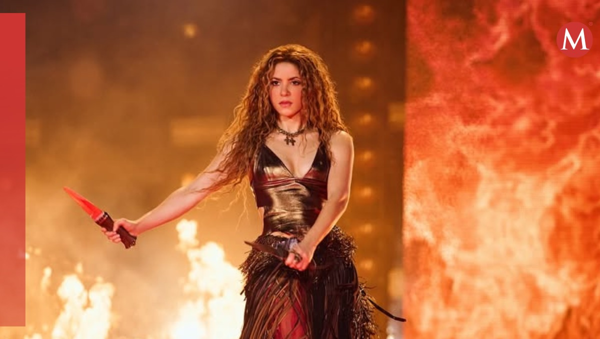

Shakira
Shakira Isabel Mebarak Ripoll nació el 2 de febrero de 1977
en Barranquilla, Colombia. Es una cantante, compositora,
bailarina y empresaria colombiana reconocida mundialmente
por su talento musical y sus espectaculares presentaciones.
Canciones famosas
- Hips Don't Lie
- Waka Waka
- Whenever, Wherever
- La Tortura
- Monotonía
Datos curiosos
Shakira canta en español e inglés y ha vendido millones de discos a lo largo de su carrera.
Ha ganado numerosos premios, entre ellos varios Premios Grammy y Latin Grammy.
🌍 El Salto Internacional (Años 2000)
- Suerte (Whenever, Wherever): Su gran éxito en todo el mundo.
- Underneath Your Clothes: Una balada romántica en inglés.
- La Tortura: Junto a Alejandro Sanz, un clásico del pop latino.
- Hips Don't Lie: Con Wyclef Jean, uno de los sencillos más vendidos de la historia.
- Loba (She Wolf): Pop electrizante y un estilo muy bailable.
⚽ Himnos Globales y Ritmos Populares
- Waka Waka (This Time for Africa): Himno oficial del Mundial de Sudáfrica 2010.
- Loca: Ritmo merengue y urbano.
- La Bicicleta: Junto a Carlos Vives, un tema fresco y caribeño.
- Chantaje: Junto a Maluma, pop urbano.
🎧 Éxitos Recientes
- Shakira: Bzrp Music Sessions, Vol. 53: Su gigantesco éxito mundial con Bizarrap.
- TQG: Colaboración con Karol G.
- Monotonía: Bachata junto a Ozuna.
- Puntería: Junto a Cardi B, de su álbum 'Las Mujeres Ya No Lloran'.

- Nombre completo: Shakira Isabel Mebarak Ripoll
- Fecha de nacimiento: 2 de febrero de 1977
- Lugar de nacimiento: Barranquilla, Colombia
- Profesión: Cantante, compositora, bailarina y empresaria
- Idiomas: Español e inglés